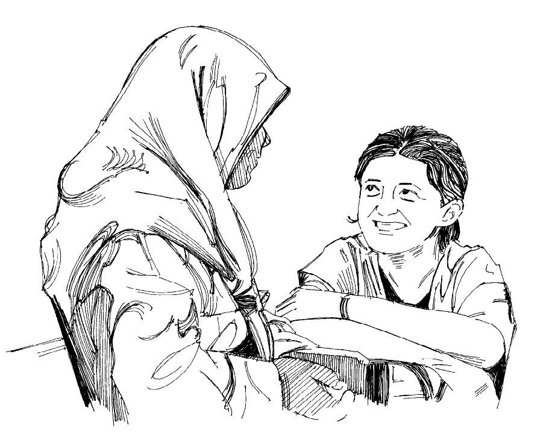
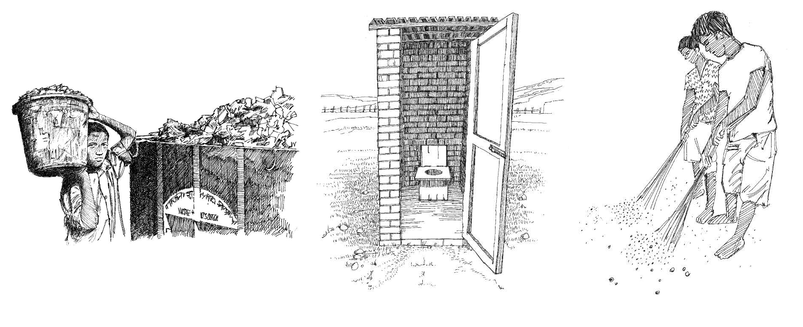

Un buen saneamiento es vital para detener la propagación de muchas epidemias, como la diarrea y el cólera.
Como voluntarios, puede alentar a los miembros de la comunidad a mejorar su saneamiento mediante el uso de letrinas, la eliminación de basura y la eliminación del agua estancada.
Estas son las iniciativas sanitarias más importantes para prevenir enfermedades
Deseche las excretas (heces) de forma segura (mediante la construcción de letrinas).
Deseche los residuos sólidos y la basura de forma segura.
Entierre o destruya los cadáveres de los animales de forma segura.
Controle los vectores de enfermedades y proteja a las personas de estos.
Incinere los desechos médicos.
Drene o elimine las aguas residuales y el agua estancada. (Los campamentos deben diseñarse teniendo esto en cuenta).
Promueva la higiene y enseñe a las personas a mantenerse seguras y limpias.

Hable con su comunidad sobre las prácticas sanitarias adecuadas
¿Cómo apoya usted un buen saneamiento?
Promueva la construcción y el uso de letrinas.
Aliente a la comunidad a quemar o enterrar la basura.
Movilice a la comunidad para reducir el agua estancada donde es probable que los mosquitos se reproduzcan.

Eliminar los desechos de manera segura. Construir y utilizar adecuadamente las letrinas.Campaña de limpieza de la comunidad.
Herramientas para mensajes comunitarios
Vea los siguientes mensajes de la comunidad para apoyar saneamiento: